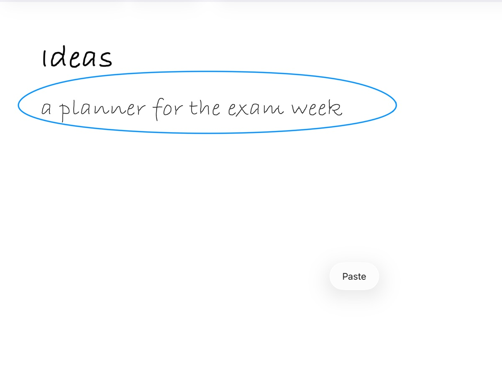
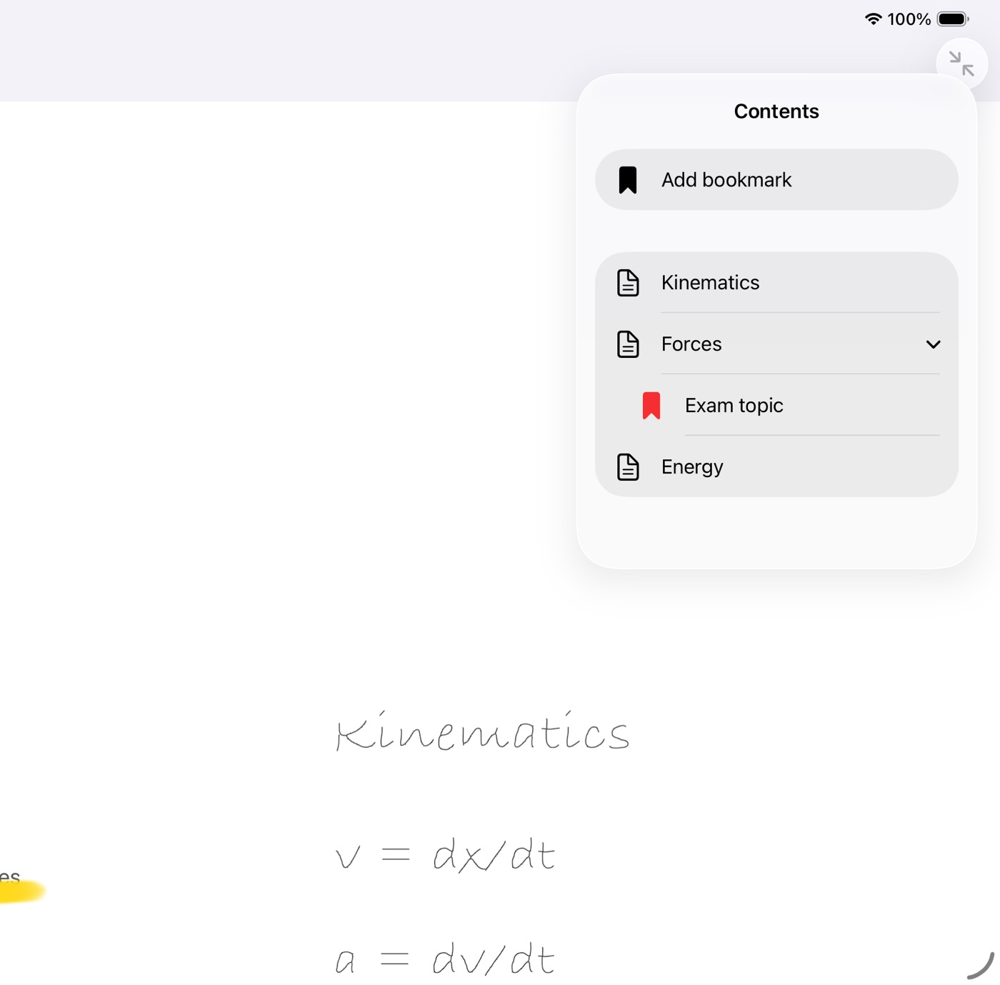
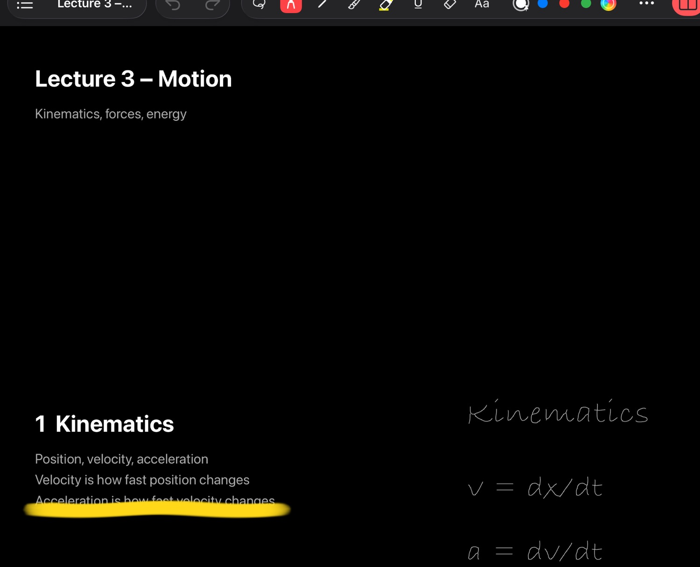
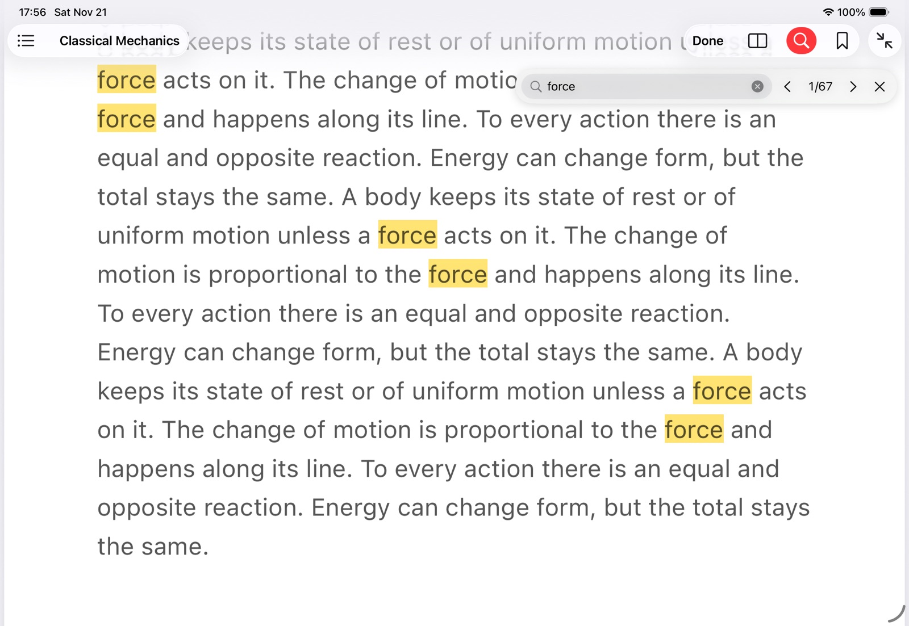
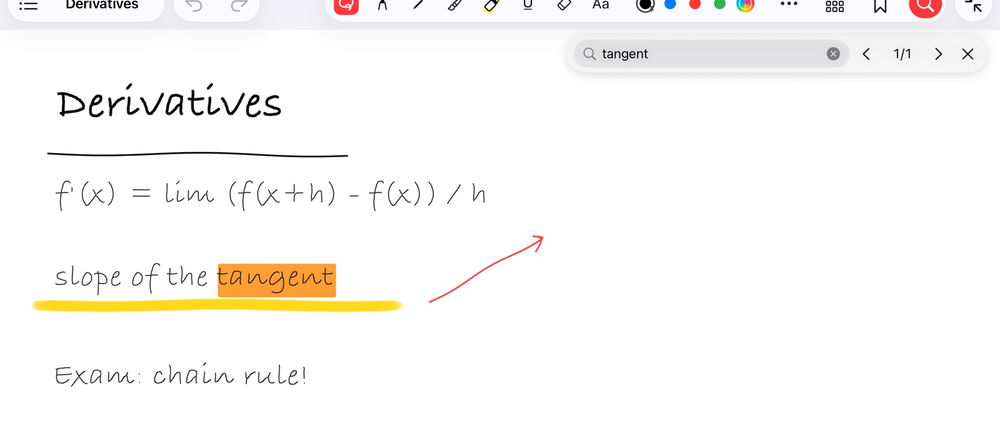
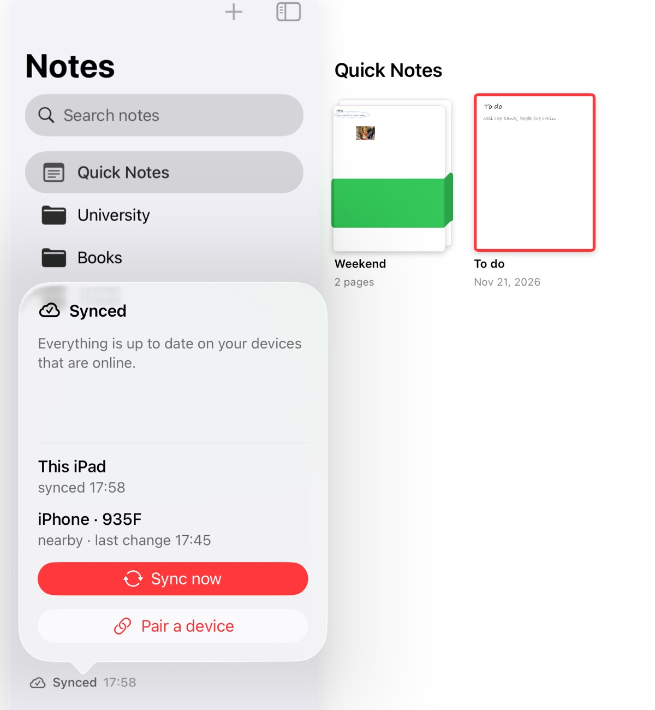

Your handwriting, on every device.
Free on iPad, iPhone and Mac. No ads, no account.


Free on iPad, iPhone and Mac. No ads, no account.
Pens, highlighter, eraser, lasso, ruler and your colors, in the title bar. Tap a tool again for its thickness, line and colors.
Hold the pen still at the end of a stroke for a clean line, circle or arrow. Scribble over something to delete it.


Black on white, white on black, automatically. Highlights dim on dark paper.

Lasso your writing and paste it in another note, or on another of your devices.

Text boxes anywhere on the page, or a whole page in Text mode.
Turn lecture slides or a whole book into pages to write on. Side notes give every slide room for your own.


In Contents, and kept as chapters when you share a PDF.

Darken PDFs turns white slides dark, without touching the file.
Read mode puts pages side by side. Search finds words in typed text, in PDFs, and in what you wrote by hand, read on your device.


Apple’s text recognition reads it on your device. Nothing leaves it.
Quick Notes for anything, folders for your subjects, groups inside them. Drop one note on another to make a group, and type >> to link a note, a group or a bookmark.

Your notes on iPad, iPhone and Mac through your own iCloud Drive: no sign-up, nothing to host, nothing to pay.
On the same Wi‑Fi or hotspot, a change arrives in about a second, even on the page you have open.



Nothing to sign up for, nothing to sign in to.
No ads, no analytics, no data collected. Nothing is sent to us.
Notes stay on your devices and in your own iCloud. Deleted ones wait 60 days in the Recycle Bin.
No subscription, no locked features, no ads. All of it, on every device.
Yes. Every feature is included on iPad, iPhone and Mac: no subscription, no in-app purchases, no ads.
No. There is nothing to sign up for. Your notes sync through your own iCloud Drive.
Yes. Write and draw with a finger on iPad and iPhone, or with the mouse or trackpad on Mac.
Yes. Import a PDF or a book and write on its pages, with room beside each slide for side notes. Share as PDF keeps chapters and bookmarks.
Export them as PDF from the app you use now and import the PDF into Ultimate Notes: you can keep writing on every page.
Yes. Search finds words you wrote by hand, in typed text and in PDFs. Handwriting is read on your device; nothing leaves it.
None. No tracking, no analytics, nothing sent to us. Your notes stay on your devices and in your iCloud Drive.
iPad and iPhone with iPadOS or iOS 18 or later, and Mac with macOS 15 or later. The app is in English, Italian, German, Spanish and French.
Free on the App Store for iPad, iPhone and Mac.